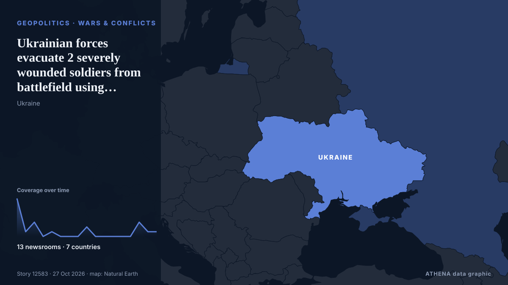

Ukrainian forces evacuate 2 severely wounded soldiers from battlefield using drone, video shows

The two soldiers, 25-year-old Yevhen, call sign "Izium," and 24-year-old Artem, call sign "Kolobok," had suffered severe limb injuries and were stranded in a contested area about 5 kilometers (3… von Kyiv Independent
Unabhängig gemeldet von 13 Medien in 7 Ländern seit dem 19. Okt., zuerst von Ukrainska Pravda (English); die Berichterstattung ist auf dem Höhepunkt. ATHENA stuft das Risiko als hoch ein (6.8/10), vor allem wegen der Schwere des beschriebenen Schadens und der Qualität der Belege. Die Konfidenz liegt bei 93 % (hoch): 13 Medien bestätigen es unabhängig, bei einer mittleren Verlässlichkeit der Quellen von 80 %. Wer berichtete: 10 Medien in Ukraine, 2 Medien in Belgien · Belgium, 2 Medien in Vereinigte Staaten · United States. Die Berichterstattung lief von 19. Okt. bis 27. Okt., über 193 Stunden.
Warum es wichtig ist: Russlands Großangriff auf die Ukraine begann im Februar 2022. Dieser Tracker verfolgt die Kämpfe, Angriffe auf Infrastruktur und die Diplomatie rund um den Krieg, wie Redaktionen weltweit darüber berichten.
Was sich geändert hat: 5 neue Berichte von 2 Redaktionen in den 24 Stunden bis 27. Okt..
Erste Schlagzeile: Ukraine forces evacuate wounded soldier using aerial drone for the first time – video
Schlagzeilen werden auf Englisch angezeigt, wie veröffentlicht.
Auf einen Blick
Ausgewählt, bewertet und geschrieben nach der veröffentlichten Methodik von ATHENA. Kein Redakteur greift in einzelne Ereignisse ein. So entsteht ATHENA ›
| 19 Oct 10:25 UTC | 8 |
|---|---|
| 19 Oct 22:25 UTC | 1 |
| 20 Oct 10:25 UTC | 3 |
| 20 Oct 22:25 UTC | 0 |
| 21 Oct 10:25 UTC | 1 |
| 21 Oct 22:25 UTC | 0 |
| 22 Oct 10:25 UTC | 0 |
| 22 Oct 22:25 UTC | 0 |
| 23 Oct 10:25 UTC | 2 |
| 23 Oct 22:25 UTC | 0 |
| 24 Oct 10:25 UTC | 0 |
| 24 Oct 22:25 UTC | 0 |
| 25 Oct 10:25 UTC | 0 |
| 25 Oct 22:25 UTC | 0 |
| 26 Oct 10:25 UTC | 3 |
| 26 Oct 22:25 UTC | 1 |
| 27 Oct 10:25 UTC | 1 |
| 19 Oct 15:50 UTC | 5.5 |
|---|---|
| 22 Oct 07:09 UTC | 6.2 |
| 27 Oct 11:25 UTC | 6.8 |
Warum diese Zahlen
Bedeutung
Risiko
Konfidenz
Die Berichterstattung – wer berichtete, und wann
Schlagzeile wie veröffentlicht · öffnet das Original- Ukrainska Pravda (English) · UkraineUkraine forces evacuate wounded soldier using aerial drone for the first time – video
- Euractiv · Belgien · BelgiumUkraine says it evacuated a wounded soldier with a heavy-lift drone
- NBC News (World) · Vereinigte Staaten · United StatesUkraine claims world’s first drone evacuation of wounded soldier
- Kyiv Post · UkraineWounded Ukrainian Soldier Airlifted by Heavy Drone in World’s First
- Kyiv Independent · UkraineUkrainian forces evacuate injured soldier from front-line position by drone in 'first-of-its-kind' mission, video shows
- France 24 English · Frankreich · FranceUkraine deploys drone to airlift wounded soldier in 'world-first' operation
- Kyiv Independent · UkraineUkraine war latest: Ukraine evacuates wounded soldier from front line by drone for first time, military says
- BBC News · Vereinigtes Königreich · United KingdomUkraine says it carried out first drone airlift of wounded soldier from front line
- Euronews English · Frankreich · FranceUkraine carries out first drone airlift of wounded soldier from front line
- EUobserver · Belgien · BelgiumUkrainians evacuate soldier using heavy air drone after he spent 500 days at the front, in another first-ever in the war (Ukraine Battlefield update, day 1,699)
- CBS News (World) · Vereinigte Staaten · United StatesUkraine's military evacuates wounded soldier with aerial drone
- RFE/RL (English) · INTWounded Ukrainian Soldier Rescued From Front Lines By Aerial Drone
- CBC News · Kanada · CanadaUkraine says this drone can fly injured soldiers off the front line | About That
- Ukrainska Pravda (English) · Ukraine491 days in the grey zone and losing both feet: exclusive details of the first-ever aerial evacuation aboard a Heavy Shot drone
- Meduza (English) · Russland · RussiaUkrainian commanders report first known aerial drone rescue of wounded soldier
- Ukrainska Pravda (English) · UkraineUkrainian military rescues two wounded soldiers using aerial evacuation drone – video
- Kyiv Independent · UkraineUkrainian forces evacuate 2 severely wounded soldiers from battlefield using drone, video shows
- Kyiv Independent · UkraineUkraine war latest: Ukrainian forces carry out 2 aerial evacuations of wounded soldiers, video shows
- Ukrainska Pravda (English) · UkraineUkrainian drones have wiped out over 300,000 Russian soldiers so far this year
- Kyiv Independent · Ukraine302,000 Russian soldiers killed or wounded by Ukrainian drones since January, Defense Ministry says